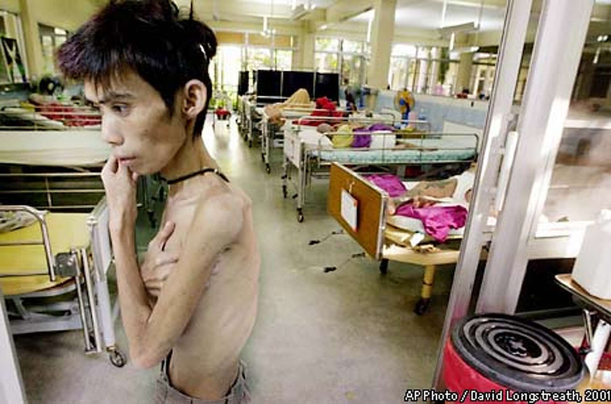

Today
1
HIV and AIDS — what do you know?
2
Get ready to read.
3
Read, and check your understanding.
4
Write.
Let’s read about Krisana Kraisintu’s amazing life.
Today
1
HIV and AIDS — what do you know?
2
Get ready to read.
3
Read, and check your understanding.
4
Write.
AIDS in Thailand

Question 1 of 5
A HIV is a virus. AIDS is the illness it can cause.
B They are two names for the same thing.
C HIV is the illness. AIDS is the virus.
D Neither one is dangerous today.
A. HIV is the virus. AIDS is the illness it can cause.
Question 2 of 5
A Sharing a needle with someone.
B Having sex without a condom.
C A mother passing it to her baby.
D Sharing a spoon with someone who has HIV.
D. HIV does not travel on a spoon. You cannot catch it by sharing food or a cup.
Question 3 of 5
A They invited the person to live with them.
B Many were afraid, and stayed away from them.
C Nobody noticed.
D They asked the school to teach about it.
B. Fear made people keep away — and that is why some patients hid their illness.
Question 4 of 5
A About 90.
B About 900.
C About 9,000.
D About 90,000.
C. 9,067 in the 2024 figures — far fewer than twenty years ago, but not zero.
Question 5 of 5
A Nothing. Their families were not affected.
B Many lost one parent, or both.
C They were all cured.
D They moved to other countries.
B. Many children lost a parent. Some of them live in the orphanage in the reading.
Before you start
Silent reading
Self-check
On your own
Take the answer page. Do not change your answers — mark each one right or wrong.
For every wrong answer, find the sentence in the text that shows why.
Write your score at the top of the sheet.
Writing task · A2
If your sheet says A2
Write a message to a friend about Krisana Kraisintu. Say one thing she did, and why you think it is important.
About 70 words. Use one fact from the text.
Writing task · B1
If your sheet says B1
You are Nook. It is 2027. You were a small, sick child in the orphanage in 2004, and you survived because of Dr Krisana’s medicine.
Write an Instagram post to thank her. At least 70 words, two facts from the text, and two or three hashtags.
Writing task · B2
If your sheet says B2
Other countries could copy Krisana Kraisintu’s way of working: teach people to make medicine, rather than send it to them.
Write a short article arguing whether they should. 120–150 words, evidence from the text, and a clear recommendation.
Writing time